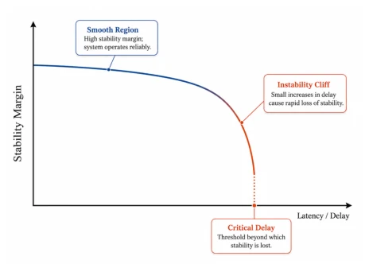
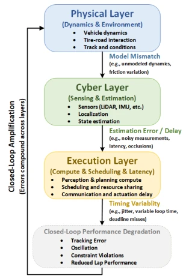

这篇论文没整新算法，而是给自动驾驶赛车圈泼了盆冷水。作者把 Sim-to-Real 从“调参玄学”拉回“系统工程”，指出光在仿真里跑得快没用，真实世界的延迟和抖动才是杀手。亮点是提出了物理/网络/执行三层框架，把延迟分布和性能翻转（Performance Flip）量化了，挺实用。缺点是更像一篇综述或观点文，缺乏新提出的具体控制策略验证，更多是教人怎么“避坑”。对于追求 SOTA 的读者可能觉得不够硬核，但对工程落地很有指导意义。毕竟赛车不是城市驾驶，容错率低，这论文算是给那些在仿真里吹牛、实车翻车的团队提了个醒。它揭示了跨层失效机制，强调实时性不是实现细节而是设计约束，这点很清醒。
This paper does not develop a new algorithm but rather pours cold water on the autonomous racing community. The authors bring Sim-to-Real back from 'parameter tuning metaphysics' to 'systems engineering,' pointing out that running fast in simulation alone is useless; real-world latency and jitter are the true killers. The highlight is proposing a physics/network/execution three-layer framework, quantifying latency distribution and Performance Flip, which is quite practical. The drawback is that it resembles more a review or opinion paper, lacking verification of newly proposed specific control strategies, and more about teaching people how to 'avoid pitfalls.' For readers pursuing SOTA, it may seem not hardcore enough, but it has significant guidance for engineering implementation. After all, racing is not city driving, with low fault tolerance; this paper serves as a warning to teams that brag in simulation but crash in real vehicles. It reveals cross-layer failure mechanisms, emphasizing that real-time performance is not an implementation detail but a design constraint, which is a very clear-headed insight.
Autonomous racing serves as a Sim-to-Real testbed under extreme conditions, characterized by high speed and low-friction limits where tiny errors can lead to loss of control. Existing research mostly focuses on model accuracy or reinforcement learning generalization [4][6], but often neglects latency and jitter at the real-time execution level. While city driving has high fault tolerance, racing does not. Many deployments underestimate the impact of pipeline latency and scheduling jitter on closed-loop stability [1]. The paper points out that a high ranking in simulation does not equate to good real-vehicle performance, citing the existence of a 'Performance Flip' phenomenon. The challenge is how to quantify and mitigate these mismatches at the full-stack level (physics, perception, execution), rather than merely improving single modules. Furthermore, existing work lacks standardized reporting on 'Tail Latency', making fair comparison difficult, which limits the reproducibility of algorithmic progress.

Fig. 2. Conceptual illustration of stability degradation with increasing latency. Autonomous racing systems often exhibit sharp performance cliffs rather than gradual degradation, emphasizing the importance of tail-latency characterization.
The core lies in a three-layer perspective: Physics Layer (dynamics/environment), Network Layer (perception/estimation), and Execution Layer (computation/scheduling). It proposes a diagnostic metric system, including stability metrics beyond lap times, Performance Flip detection, latency histograms (focusing on tail latency), and noise/latency sensitivity curves. Mitigation strategies emphasize 'execution-aware' and 'latency-aware' design, such as latency-aware control and architectural trade-offs (graceful degradation). Finally, benchmarking specifications are provided, requiring public disclosure of hardware, cycle frequency, and latency distribution to ensure fair comparison. This is not a single algorithm but a set of guidelines for full-stack system design. Specifically, the method requires treating timing as a first-class system parameter rather than an implementation detail. Dynamics mismatch is reduced through system identification, and robustness is enhanced using domain randomization, though computational overhead must be balanced. Architecturally, it suggests adopting hybrid or residual structures to cope with mismatches. The ultimate goal is to achieve cross-layer co-design, ensuring stable operation under real-time constraints.

Fig. 1. Layered and closed-loop view of sim-to-real gaps in autonomous racing. Physical mismatch, estimation delay, and execution-layer latency propagate across the autonomy stack, while control actions feed back into vehicle dynamics, amplifying instability under high-speed operation.
实验Experiments
论文未提出新控制器，而是通过对比现有赛车研究（如 F1TENTH 平台相关论文 [3][5][7]）来验证观点。Table II 展示了不同工作在动力学、感知、执行及全栈分析上的覆盖情况，发现多数工作缺乏实时性量化。通过概念图（Fig 2）说明延迟导致性能悬崖而非渐变。实验部分主要是方法论验证，建议通过注入延迟、噪声等压力测试来评估鲁棒性，而非单纯比拼圈速。对比显示，虽然实车验证常见，但详细的全栈实时性分析仍不均衡。这支持了论文提出的标准化基准测试的必要性，强调了在计算和时序约束下进行公平比较的重要性。
The paper does not propose a new controller but verifies its viewpoint by comparing existing racing research (e.g., papers related to the F1TENTH platform [3][5][7]). Table II displays the coverage of different works on dynamics, perception, execution, and full-stack analysis, revealing that most works lack real-time quantification. Through a conceptual diagram (Fig 2), it illustrates that latency leads to a performance cliff rather than a gradual decline. The experimental section is primarily methodology validation, suggesting evaluating robustness through stress tests such as injecting latency and noise, rather than simply competing on lap times. Comparisons show that while real-vehicle validation is common, detailed full-stack real-time analysis remains uneven. This supports the necessity of the standardized benchmarking proposed by the paper, emphasizing the importance of fair comparison under computational and timing constraints.